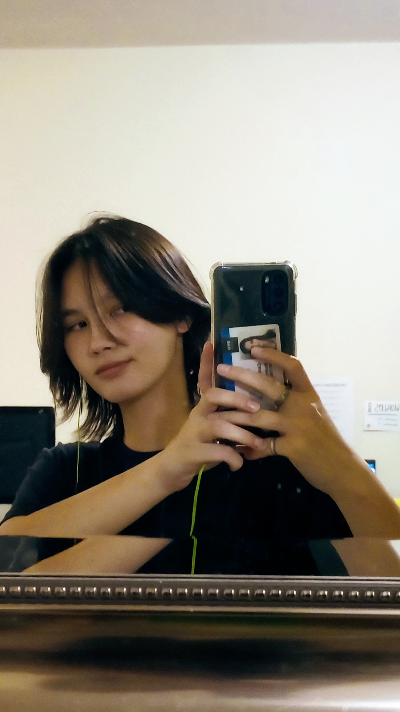

Caitlyn Caldwell
My name is Caitlyn Caldwell. I am 18 years old and I am from Riverside, California. This is my 4th semester here at BYUI and I am a Software Engineering major. I used to be Business Management, but I recently switched. My hobbies include playing games and photography. I mostly photograph things in nature, specifically birds and bugs. I also really enjoy traveling around with family and friends.